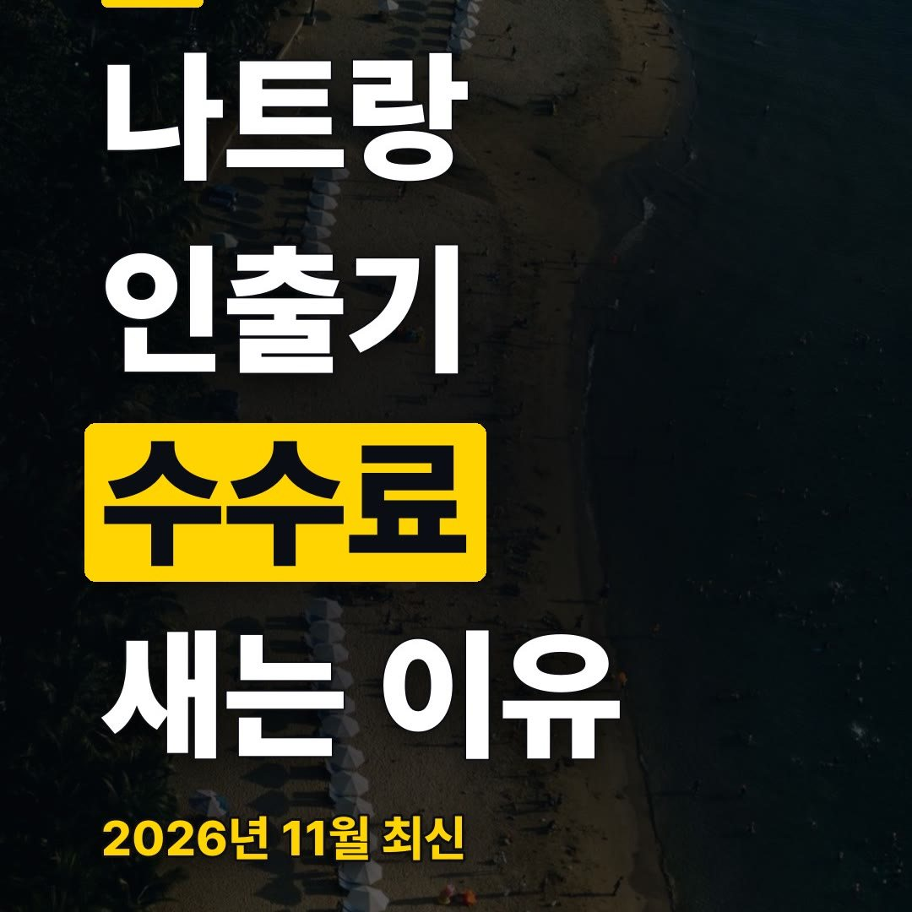
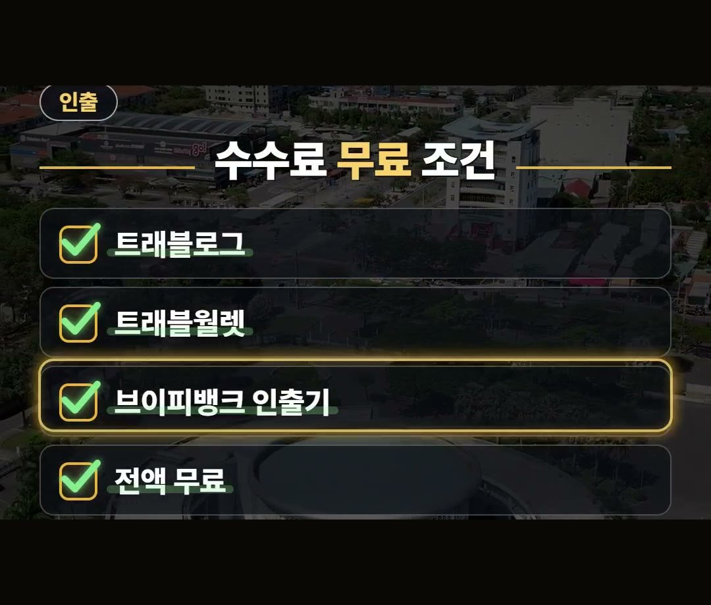
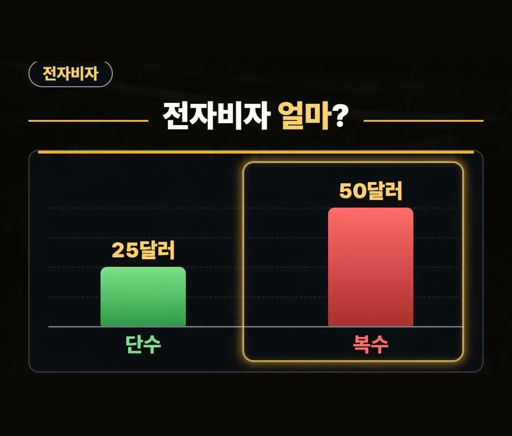
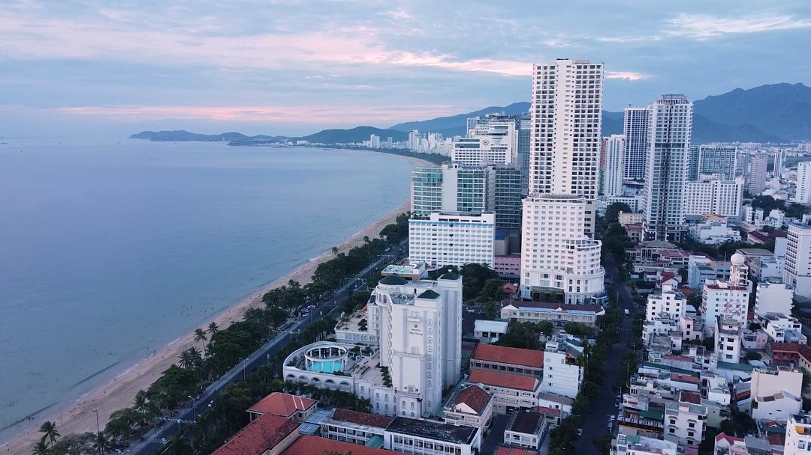
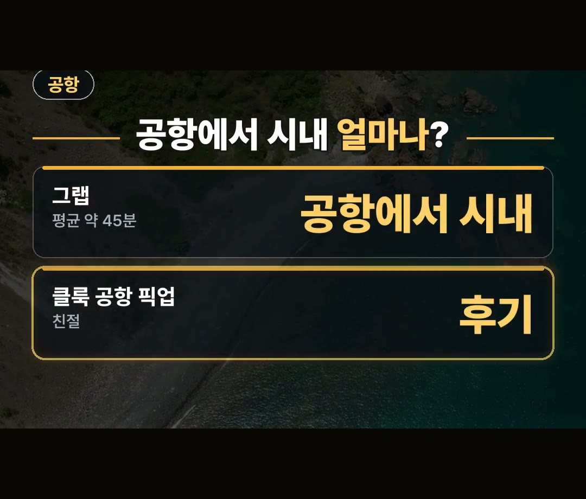
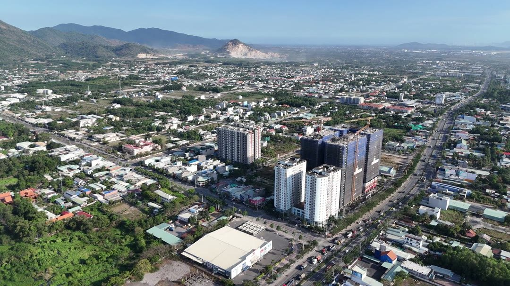

나트랑 여행 준비 체크리스트, 인출기·무비자·돼지코에서 다들 하는 실수 3가지
※ 이 글에는 제휴 링크가 포함되어 있으며, 링크를 통해 예약·구매하시면 일정 수수료를 받을 수 있습니다. (가격은 같습니다)
※ 이 포스팅은 쿠팡 파트너스 활동의 일환으로, 이에 따른 일정액의 수수료를 제공받습니다.
11월에 들어서면서 연말 휴가로 나트랑을 알아보는 분이 많아지는 때예요.
출발이 가까워지면 짐부터 싸기 쉬운데, 막상 현지에서 돈과 시간을 쓰게 만드는 건 짐보다 준비 순서인 경우가 많아요.
이 글에서는 나트랑 여행 준비에서 다들 하는 실수 세 가지와 공항에서 시내로 가는 길까지 차례대로 정리했습니다.
트래블로그·트래블월렛 카드는 브이피뱅크(VPBank) 인출기에서 현지 인출 수수료가 전액 무료예요!
한국 여권은 비자 없이 최대 45일까지라는 것도 같이 기억하세요 ✈

나트랑 여행 준비 체크리스트 첫 번째, 아무 인출기나 쓰는 실수
베트남은 현금을 쓸 일이 남아 있어서 현지 인출기를 찾게 되는데, 가장 흔한 실수가 눈에 보이는 아무 인출기나 쓰는 거예요.
같은 카드라도 어느 은행 인출기를 쓰느냐에 따라 수수료가 달라질 수 있어요.
- 트래블로그 카드: 브이피뱅크 인출기 현지 수수료 전액 무료
- 트래블월렛 카드: 브이피뱅크 인출기 현지 수수료 전액 무료
카드를 챙길 때 어느 은행 인출기를 쓸지까지 같이 정해 두면 현지에서 헤매는 시간이 줄어요.
출발 전에 카드 앱에서 충전과 해외 인출 설정이 켜져 있는지도 함께 살펴보세요.
현지에 도착한 첫날은 이동과 체크인으로 바쁘기 때문에, 이런 확인은 한국에서 미리 끝내 두는 편이 편해요.

나트랑 여행 준비 서류, 무비자만 믿는 실수
두 번째 실수는 무비자만 믿고 일정을 길게 잡는 거예요.
한국 여권은 비자 없이 최대 45일까지 머물 수 있어요.
한 달 살기처럼 일정이 길어 45일을 넘기게 된다면 전자비자를 받아야 해요.
- 무비자: 최대 45일
- 전자비자: 최대 90일
- 전자비자 단수: 25달러
- 전자비자 복수: 50달러
단수와 복수는 한 번 들어가는지, 여러 번 드나드는지에 따라 고르면 돼요.
비자 규정과 수수료는 바뀔 수 있어서, 신청 직전에는 공식 신청 화면의 금액을 한 번 더 확인해 보세요.

나트랑 여행 준비물 리스트, 돼지코부터 사는 실수
세 번째는 돼지코부터 사는 실수예요.
베트남 전압은 한국과 같은 220V예요.
짐을 쌀 때 습관처럼 돼지코를 먼저 챙기기보다, 가져갈 전자기기가 무엇인지부터 확인해 보는 편이 순서상 편해요.
준비물 리스트를 짤 때는 이렇게 나눠 보세요.
- 카드: 트래블로그 또는 트래블월렛
- 서류: 여권, 일정이 45일을 넘으면 전자비자
- 전기: 한국과 같은 220V라는 점 확인
- 공항 이동: 도착 시간에 맞춰 이동 방법 정해 두기
이렇게 칸을 나눠 두면 빠진 것이 한눈에 보여서, 출발 전날 밤에 급하게 챙기는 일이 줄어요.

공항에서 시내까지, 그랩 평균 약 45분
깜란 공항에 내려 나트랑 시내로 갈 때는 이동 시간도 미리 알아 두면 좋아요.
그랩 기준으로 공항에서 시내까지 평균 약 45분이에요.
- 그랩: 공항에서 시내 평균 약 45분
- 클룩 「깜라인 국제공항 공항 픽업/샌딩」: 2026년 11월 10일 기준 별점 4.7, 이용후기 13629건
이 상품 후기에서는 시간에 맞춰 기다려 줬다는 말과 친절하다는 말이 많이 보였어요.
밤 비행기로 늦게 도착하는 일정이라면 공항 이동을 미리 정해 두는 쪽이 마음이 편해요.


정리
- 트래블로그·트래블월렛 카드는 브이피뱅크 인출기에서 현지 인출 수수료가 전액 무료예요.
- 한국 여권은 비자 없이 최대 45일, 넘기면 전자비자(최대 90일 · 단수 25달러 · 복수 50달러)예요.
- 베트남 전압은 한국과 같은 220V이고, 공항에서 시내는 그랩 평균 약 45분이에요.
나트랑 여행 준비는 짐보다 카드·서류·공항 이동 순서부터 정해 보세요.
예약 링크는 아래에 모아 두었어요.
지금 쓸 수 있는 여행사 할인
- 📶 해외 데이터는 이심으로 미리 · 마이리얼트립 마이심 「베트남 50% 100원~」 · 2개 이상 추가 할인 (마이심 화면 표시 기준 · 11/27 확인 · 값은 바뀔 수 있음)
※ 여행사 사정으로 조건이 바뀌거나 일찍 끝날 수 있어요. 예약 전에 여행사 화면에서 한 번 더 확인하세요. (2026-11-27 확인)
📘 무료 여행 가이드 전자책 모음 보기 (오사카 · 후쿠오카 · 타이베이 · 도쿄 · 일본겨울) ›
📌 2026년 11월 기준 정보예요. 가격은 환율·시기에 따라 달라질 수 있어요.
· 그랩 깜란 국제공항 (냐짱(나트랑) 기준 평균 이동 시간 약 45분)
· 베트남가이드 베트남 콘센트·전압 (220V, 50Hz)
사진·영상사진·영상: Pexels (Hoang NC, Hữu Thịnh 79, Okan Demir, Quang Vuong, Toàn BDS, quang vinh)